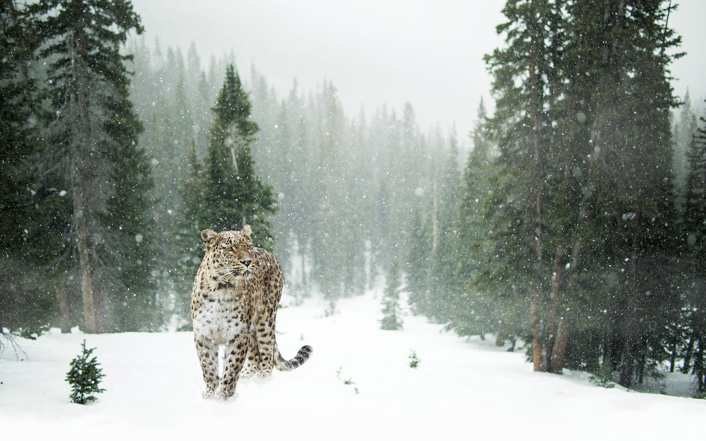
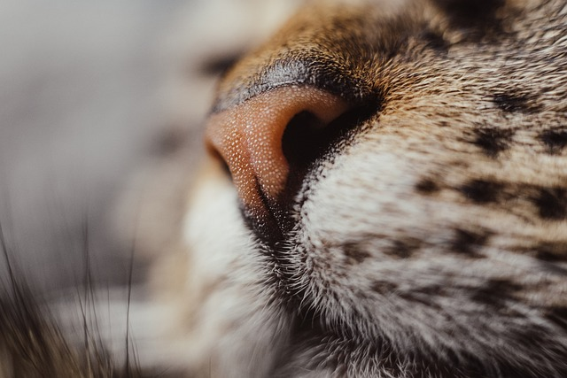
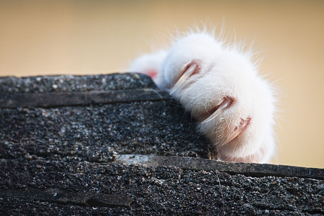
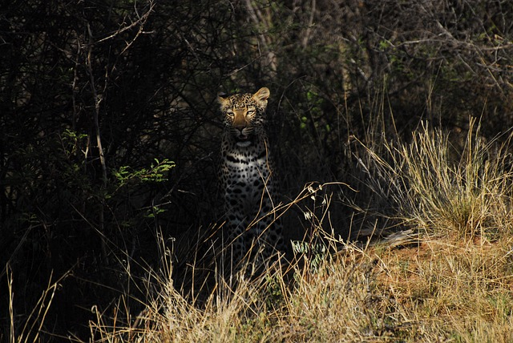

Kattdjur är fashinerande djur och indelas i fyra olika underfamiljer.
- Felinae (mindre kattdjur),
- Pantherinae (stora kattdjur),
- Acinonychinae (geparder).
- Machairodontinae (sabeltandade kattdjur, utdöd)

Kattdjur.
Kattdjur (Felidae) är en familj i ordningen
rovdjur och
underordningen kattliknande rovdjur (Feliformia).
Tillsammans med hyenor (Hyaenidae), leopardmårdar (Nandiniidae),
manguster (Herpestidae) och sibetdjur (viverrider, Viverridae); av
dessa är sibetdjur och hyenor de närmaste släktingarna. Kattdjuren
består av flera släkten och arter, som förekommer naturligt över
hela jorden, utom i Australien, Madagaskar, Grönland, norra
Ryssland och Antarktis.
Det förekommer alternativa systematiseringar mellan raserna. Vissa
kattdjur, huvudsakligen av släktet Pantherinae, kan ryta, medan
andra, huvudsakligen små, kan spinna. Vad den skillnaden beror på
är omdiskuterad; en förklaring kan vara att tungbenet är mer
förbenat hos de senare.
Tamkatten.

Vildkatten blev tidigt domesticerad av människan som nyttodjur för att hålla efter skadedjur eller för sällskap, både på landet och i stadsmiljö.
Till havs har man sedan gammalt haft skeppskatter som skyddade mot gnagarangrepp på tåg och proviantförråd. Tamkatter är inte flockdjur av naturen men tolererar som regel andra katter som de lever tillsammans med. Dessutom kan katter vara underhållande för många människor, med tillgivenhet, och används även i terapeutiskt syfte vid psykisk ohälsa. Dock begränsas användningen av att många människor får allergireaktioner mot ämnen i kattens saliv, urin eller talgkörtlar. På många platser runt om i världen, speciellt på öar utgör introducerade katter ett stort hot mot andra djur, exempelvis markhäckande fåglar.
Skillnad mellan mindre och större kattarter
De små katterna är mer opportunistiska jägare i den meningen att de kan döda och äta fler arter. Små katter kan faktiskt äta flera tusen olika arter, medan stora kattdjur endast tar ungefär hundra olika arter bytesdjur.
Detta beror på att det finns färre olika arter i de storleksklasser som de stora kattdjuren med fördel kan utnyttja. Rent teoretiskt sett skulle de större kattdjuren också kunna döda flera tusen olika arter, men gör det inte på grund av att själva jakten på till exempel en mus kostar mer energi än vad bytesdjuret innehåller. Undantaget är leoparder, som i regel har en stark böjelse för att även jaga mindre byten. I en brittisk undersökning från 1998 utförd av The Mammal Society studerade man under fem månader 964 katter som levde i 600 olika hushåll. De siffror man fick fram extrapolerade man på antalet katter i Storbritannien vilket är cirka 9 miljoner katter och kom då fram till följande siffror:
- Tillsammans dödar de brittiska katterna 200 miljoner däggdjur, 55 miljoner fåglar och 10 miljoner ödlor och ormar varje år.
- En svensk omräkning av dessa siffror ger i runda tal 22 miljoner däggdjur, 6 miljoner fåglar och 1 miljon ödlor och ormar varje år.

Kattens historia.
Tidigare ansågs egyptierna vara den kultur som längst har haft katten som tamdjur, eftersom katten hölls som heligt djur där.
Den äldsta kända kattgraven återfanns emellertid på Cypern år 2004, och kan vara 9 500 år gammal.Vilket är äldre än den neolitiska kultur som uppstod i Egypten för 8 000 år sedan. En DNA-studie utförd 2007 av National Cancer Institute pekar mot att alla världens tamkatter härstammar från en grupp afrikanska vildkatter (falbkatter) som levde i Främre Orienten för mellan 9 000 och 10 000 år sedan. Jordbruket utvecklades vid denna tid i Mellanöstern, och katten anses ha blivit domesticerad i området för att den lockades av råttor och möss i spannmålsförråd, och för att människor behövde hjälp att hålla efter dessa skadedjur. Tamkatten förmodas ha spridits snabbt över Bördiga halvmånen, inklusive Cypern och Egypten.
Tamkatten skiljer sig från arten vildkatt (Felis silvestris) i temperament, päls, tasstorlek och tandplaceringar och är mindre resistent mot vissa blodcancersjukdomar som sprids via virus.
Tamkatten är dock tillräckligt närbesläktad med vissa asiatiska arter av vilda kattdjur för att de vid korsning kan producera åtminstone delvis fertil avkomma. Sådana korsningar sker dock inte i naturen, men vissa kattraser, som exempelvis bengal har avlats fram på sådant sätt. Begreppsförvirring förorsakas ibland av att tamkatter födda i vilt tillstånd eller som förvildats, ofta felaktigt kallas för "vildkatter".
Kattdjuren har otroliga sinnesorgan.
Kattdjurens mörkerseende är gott sex gånger bättre än människans, flera arter är nattdjur.
De har begränsat färgseende likt de flesta däggdjur och kan skilja på gröna och blå nyanser, men har svårt att skilja på röda färger. Ögonen är riktade framåt och de har binokulärt seende, i dagsljus ser de lika bra som människan. De är dock närsynta i svagt ljus, och sinnen som hör till örat är de som är mest betydelsefulla för dem. Det är med hörseln de letar upp sina byten, trots att ytteröronen ingalunda är iögonfallande stora. Båggångarna i innerörat är också viktiga, för det är där balanssinnet sitter, och är troligen det sinnesorgan som är mest utvecklat. Det är detta som får dem att alltid landa på fötterna när de faller från hög höjd. Andra viktiga organ för sinnena, är morrhåren, som finns på båda sidor om nosen och ovanför ögonen, och tassarnas trampdynor verkar likaledes vara känsliga.
Luktsinnet är väl utvecklat från födseln vilket flera forskare visat såsom Jay S. Rosenblatt.' Blockeras detta sinne störs katternas dibeteende och de blir oförmögna att lokalisera en spene att dia.
Smaksinnets utveckling diskuteras utifrån olika antaganden om huruvida katten uppfattar bitterhet och sötma och syftet med detta. "Katter är kända för att vara "picky eaters" säger forskaren Peihua Jing. Vomeronasalorganet som har stor betydelse för att uppfatta olika dofter och smak är också väl utvecklat. Det kallas också Jacobsons organ och är beläget i munhålans ovansida. Känselsinnet anses välutvecklat. Kattdjur uppskattar beröring och kinderna är särskilt mottagliga för smekningar.
Utseende.

Flertalet arter är mycket lika, och skiljer sig nästan bara i storlek, medan skelettet är märkbart enhetligt.
Könen är inte påtagligt dimorfa, förutom bland lejonen, vilkas hannar har en kraftig skäggliknande behåring och längre hår på huvudet. Annars är det mest storleken som utgör skillnad men för vissa arter skiljer inte heller detta avsevärt. Kattdjur har 20 hals-, rygg- och ländkotor, 2–3 korskotor, och 15–29 svanskotor, undantaget manxkatter som mer eller mindre saknar svans. De har 30 tänder, utom lodjuret som har 28, och dessa är helt anpassade till en diet av rått kött. Alla molarer och premolarer har utvecklats till rovtänder. De vassa glesa tänderna duger därför bra till att slita loss kött från byten men inte till att tugga. Den fjärde premolaren (övre rovtanden) är mycket vass men är även utformad så att den kan krossa ben. Underkäken är tämligen smal, och käkarna korta men kraftiga. Bettet är så starkt att de kan släpa byten långa sträckor, men det beror även på de stora tinningsmusklerna. Kattdjur har kort tarm, 3–5 gånger så lång som kroppen, anpassad för den lättsmälta köttdieten.
Klorna är välutvecklade, tassarna korta, grova men med lätta steg. När kattdjur går vidrör endast fotens framdel marken, men inte det yttersta tåbenet som är uppåtvänt, och på så sätt nöter de inte på klorna.
Klorna behärskas med ett avancerat sen- och muskelsystem, som drar in dem eller spänner ut dem efter sinnesstämning och behov. Geparder utgör ett undantag då deras klor är mycket annorlunda konstruerade. Tassarna och benen är så starka att många arter med ett enda slag kan slå större djur till marken.
Kraniet är litet, med kort och brett ansikte. Lejonets är mer avlångt och framskjutande än andra arters.
Näshålan är reducerad. Nostippen är trekantig och naken, med en skåra ner till munnen, som framtill är formad som ett upp och nedvänt "V" när den är stängd. Tungan är hos alla arter sträv och har papiller som hjälper dem att slicka bort kött från byten. Öronen är trekantiga till svagt rundade och upprättstående, placerade framvända uppe på huvudet. Ögonfärgen är oftast gul till grön, undantagsvis blå i vuxen ålder. Hos de stora djuren är pupillerna runda, men hos de mindre arterna elliptiska. I ögat finns ett reflekterande skikt bakom syncellerna på näthinnan, och det är detta som gör deras ögon lysande om en ljusstråle möter dem i mörkret.
Pälsens utseende är anpassat till artens biotop, och fungerar som kamouflage. De vanligaste färgerna går i sandbrunt till gyllene, och är enfärgade, fläckiga eller randiga.
De har som regel lång svans, som har betydelse för balansen, men över lag inte verkar fylla någon särskild praktisk funktion. Kattdjurens kroppslängd varierar mellan 30 centimeter och över 300 centimeter. Tigrar är de största kattdjuren. Hanar av den sibiriska underarten väger i genomsnitt 230 kg och ibland upp till 307 kg. På andra sidan finns den svartfotade katten som väger bara 1 till 2 kg.
Konflikter mellan kattdjur och människor har alltid funnits.
Vissa arter är uppskattade husdjur, medan andra jagas för pälsen
eller för det hot de anses utgöra för människor
och boskap.
I några länder uppfattas kattdjuren som allvarliga hot för människan. Konflikten mellan människa och främst stora kattdjur om begränsade resurser har på vissa platser lett till att kattdjur blivit utrotade eller är starkt hotade.